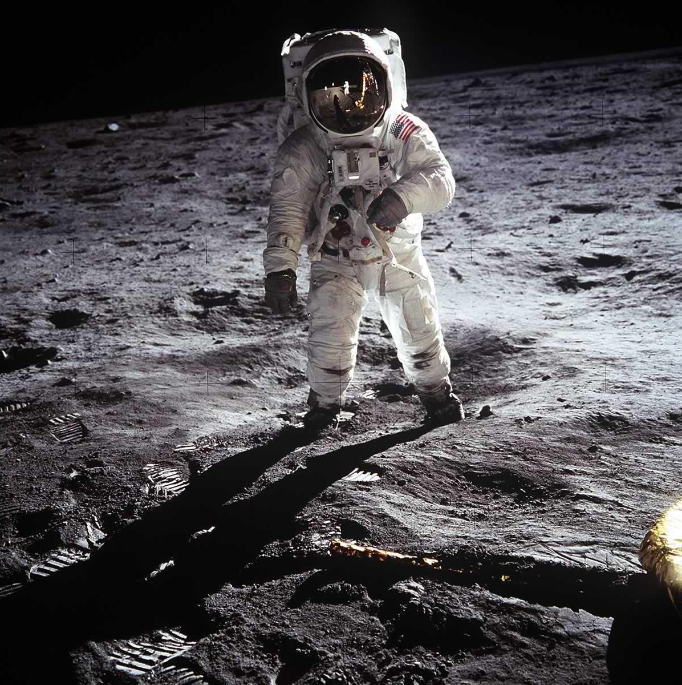

My First Post

An interesting post about how it's going to be different this time around. I'm going write a lot more nowadays and use this blog to improve my writing.
Curated royalty free space photography
––––
An interesting post about how it's going to be different this time around. I'm going write a lot more nowadays and use this blog to improve my writing.